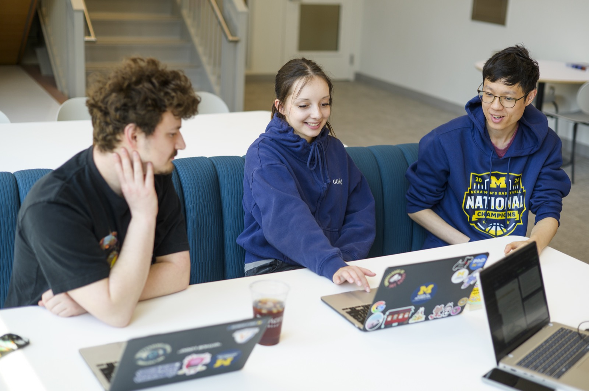
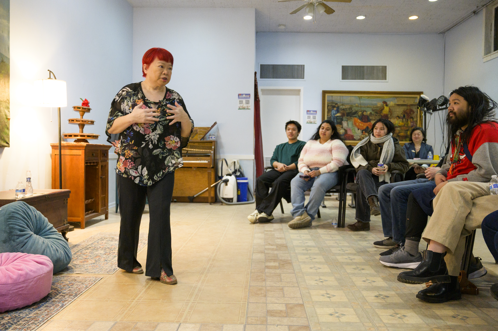

Preparing for Your Engaged Learning Experience
Begin as a Collaborative Learner
Preparation is more than choosing a topic or making a task list. Before proposing a solution, learn about the organization, community, project history, and people who may be affected by your work.
Your role is not to enter a community as an outside expert who will fix a problem. Listen carefully, ask questions, contribute your developing expertise, and work alongside people who already understand their organization and community.


Preparation Goals
- Develop social and community awareness: Examine your identity, assumptions, and privileges, and learn about the community's history and priorities.
- Understand expectations: Review program requirements, project commitments, deadlines, and expected outcomes.
- Assess team readiness: Identify each team member's skills, interests, availability, responsibilities, and learning goals.
- Begin project scoping: Learn about the organization's needs, intended users, constraints, and desired outcomes before committing to a solution.
Recommended Preparation Process
- Reflect on your position. Identify experiences and assumptions that may shape your approach.
- Learn about the context. Research the organization, community, project history, stakeholders, and relevant social conditions.
- Set learning goals. Record the technical, professional, interpersonal, and ethical skills you want to develop.
- Review team capacity. Compare the team's skills and availability with the likely needs of the project.
- Identify open questions. List what your team needs to learn from the partner before finalizing the scope or deliverables.
Questions to Discuss with Your Team
- What do we hope to learn from this experience?
- Who will be affected by the project and its outcomes?
- What assumptions are we making about the partner, community, or problem?
- What knowledge and skills does our team already have?
- What knowledge or perspectives are missing?
- How will the partner participate in project decisions?
- What would a mutually beneficial result look like?
Preparation Resources
- Social Identity Snapshot: Reflect on identity and positionality before entering a community context.
- Check Yourself Community Engagement Checklist: Review personal assumptions and ethical readiness.
- IAP2 Spectrum of Public Participation: Understand different levels of community involvement and decision-making power.
- Project Scoping Handout and Terms: Translate partner needs into realistic project goals.
- Project Management Worksheet: Clarify project objectives, team roles, and timeline.
Next: Start the experience with clear communication and shared expectations